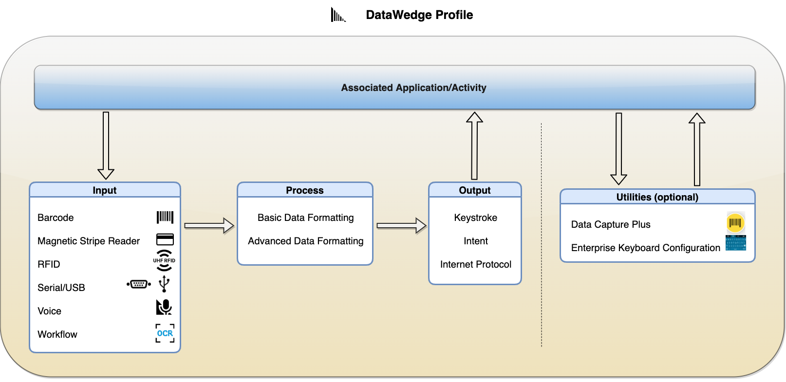

DataWedge の機能はプロファイルに基づきます。このプロファイルには 1 つまたは複数の関連付けられたアプリケーションでの DataWedge の動作に関する情報が含まれており、これにより、同じデータを取得するさまざまなアプリがさまざまに異なる操作を実行できるようになります。プロファイルを使用すると、任意の数の個別アプリケーションの要件に従って、同一のキャプチャ データセットを処理するように DataWedge を構成できます。または、1 つのプロファイルを作成して多くのアプリケーションに関連付けて、まったく同じようにデータを取得して処理させることもできます。1 つのプロファイルは 1 つ以上のアクティビティまたはアプリに関連付けることができますが、アクティビティまたはアプリは 1 つのプロファイルにのみ関連付けることができます。
各プロファイルには、データの取得方法 (入力)、データ形式に対する処理方法 (必要な場合)、およびアプリへの配信方法 (出力) を決定するオプション (別名プラグイン) が含まれています。さらに、オプションのプロファイル固有の構成設定は、ユーティリティとして分類され、そのユーティリティをアプリに関連付けたり、実行時に制御したりできます。詳細については、以下の表のリンクを参照してください。
企業のあらゆるニーズに合わせて、任意の数のプロファイルを作成できます。DataWedge には、一般的なニーズや、すべてのデバイスに組み込まれている特定のアプリをサポートするための事前構成されたプロファイルがいくつか用意されています。一部のプロファイルはユーザーに表示され、必要に応じて編集できます。その他のプロファイルには固定パラメータが含まれており、表示も構成もできません。デフォルトでは、Profile0 がプロファイルにまだ関連付けられていないフォアグラウンド アプリに対して有効になります。これにより、DataWedge はすぐにデータを取得できる状態になります。
表示可能なプロファイルは次の通りです。
 DataWedge プロファイル関連付けられたアプリ/アクティビティがフォアグラウンドになっている場合は、プロファイルがロードされ、プロファイルの構成に基づいてデータを取得 (入力)し、必要に応じて書式設定 (処理) して、配信 (出力) するアクションが実行されます。Data Capture Plus とエンタープライズ キーボード構成は、アプリ/アクティビティに対して特定の機能を実行するオプションの個別ユーティリティです。Data Capture Plus により、画面の領域をスキャン トリガとして動作させることができます。エンタープライズ キーボード構成により、カスタム生成されたキーボード レイアウトを、関連付けられたアプリ/アクティビティに表示できます。
DataWedge プロファイルの概要
プラグインの主な構成:
| プラグイン | タイプ | 主な構成 (一部のみ表示) |
|---|---|---|
| 入力 | バーコード | ∙ スキャナの選択: カメラ、1D または 2D イメージャ、Bluetooth スキャナなど ∙ ハードウェア トリガの有効化/無効化 ∙ スキャナが認識するシンボル体系/デコーダの設定 (例: EAN8、UPCA、Code128) ∙ 各デコーダのプロパティの設定 (例: 最大長またはチェック ディジット) ∙ スキャナハードウェアの構成 (例: エイム タイプまたはトリガ動作) ∙ Bluetooth スキャナの動作の構成 |
| ワークフロー | ∙ 自由形式 OCR - キャプチャした画像内のテキストを認識し、デジタル形式でテキストを抽出します。画像のキャプチャ時に、フレームのサイズをターゲットを囲むように調整できます。 ∙ OCR Wedge - 特定の使用事例でテキストを自動認識および取得して、デジタル データに変換してあらゆるアプリケーションに配信することが可能になります。具体的な使用事例は次のとおりです。 ◦ ナンバー プレート ◦ 身分証明書 - 固有の情報を抽出可能 ◦ 車両識別番号 (VIN) ◦ タイヤ識別番号 (TIN) ◦ 輸送コンテナ ID ◦ メーター読み取り ∙ イメージ キャプチャ: ◦ フリーフォーム イメージ キャプチャ - フリーフォーム イメージ キャプチャは、内蔵イメージャを使用して画像をキャプチャし、バーコードが存在する場合にデコードするオプションを備えています。 ◦ ドキュメント キャプチャは、内蔵のイメージャまたはカメラを使用して、ドキュメントをキャプチャする前にそのドキュメント (強調表示されている、または枠で囲まれている) をプレビューします。 |
|
| 磁気ストライプ リーダー (MSR) | ∙ 暗号化の有効化 ∙ インテントからデータを出力 ∙ フィードバックの構成 |
|
| 無線周波数識別 (RFID) | ∙ ハードウェア トリガの有効化/無効化 ∙ リーダー設定の構成 (例: 重複フィルタ タグ、アンテナ送信出力の設定、タグ パターンの指定など) |
|
| シリアル | ∙ シリアル ポート構成の設定 | |
| 音声 | ∙ PTT ボタンを使用して音声キャプチャの起動 ∙ 音声コマンドの構成 ∙ 返されるデータ タイプの構成 (英字、数字、任意) ∙ オフライン音声認識 ∙ 確認ウィンドウ (必要に応じて編集できるようにキャプチャ データを確認) |
|
| 処理 | 基本データ形式 (BDF) (オプション) |
∙ 接頭部の追加 ∙ 接尾部の追加 ∙ 16 進として送信 ∙ TAB キーの追加 ∙ ENTER キーの追加 |
| 高度なデータ形式 (ADF) (オプション) |
∙ 取得したデータを処理するための特定の基準とアクションを含むカスタム ルールの作成 | |
| 出力 | インテント | ∙ インテント アクションの設定 ∙ インテント カテゴリの設定 ∙ インテント配信の設定 |
| キーストローク | ∙ キーストロークをキー イベントとして送信 ∙ 特定のキー イベントを文字列として送信 ∙ キー イベントの遅れの設定 |
|
| インターネット プロトコル | ∙ プロトコルの設定: TCP または UDP ∙ IP アドレスの設定 ∙ ポート番号の設定 |
|
| ユーティリティ (オプション) | Data Capture Plus (DCP) | ∙ スキャンをトリガするボタンの位置の設定: 左側、右側、両側 ∙ DCP を起動するモードの設定: ボタンのみ、全画面のみ、ボタンによる全画面への切り替え |
| エンタープライズ キーボード構成 | ∙ カスタム生成レイアウトの選択 |